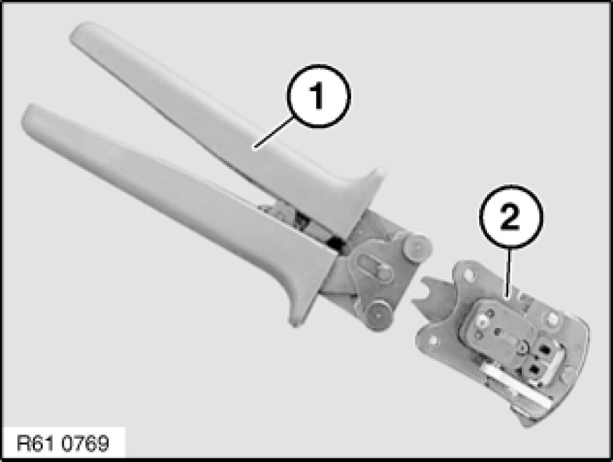
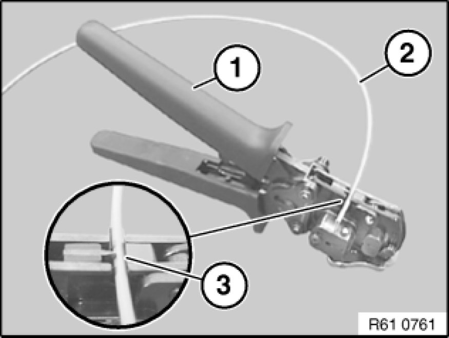
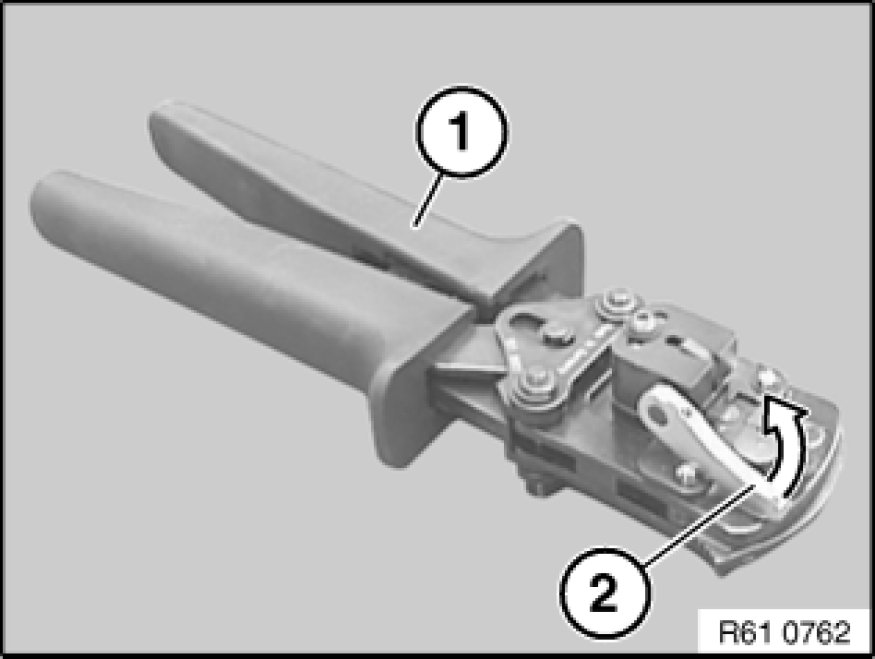
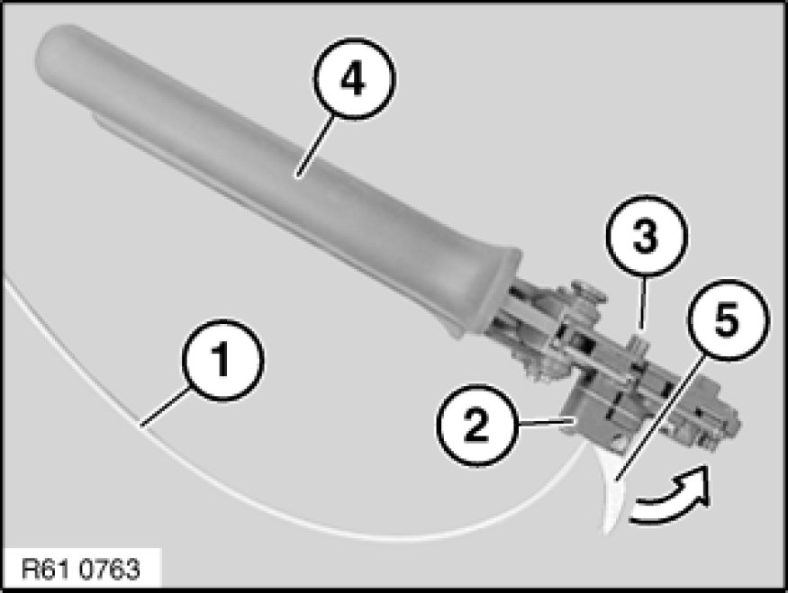
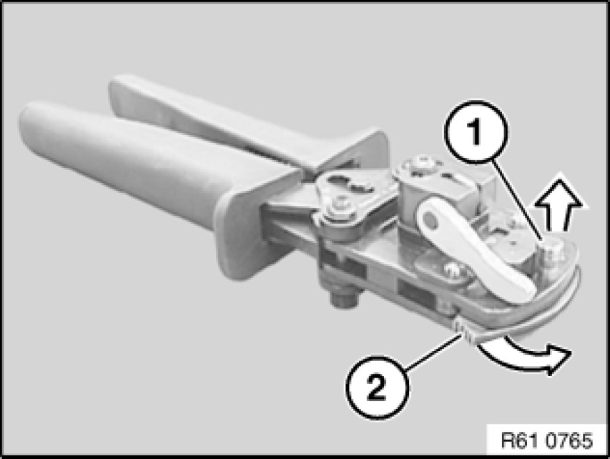
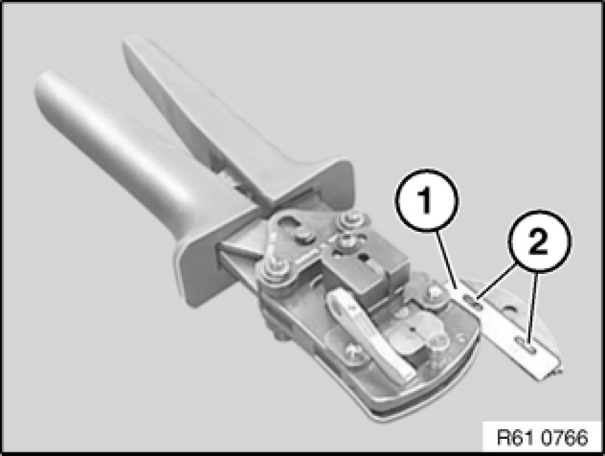
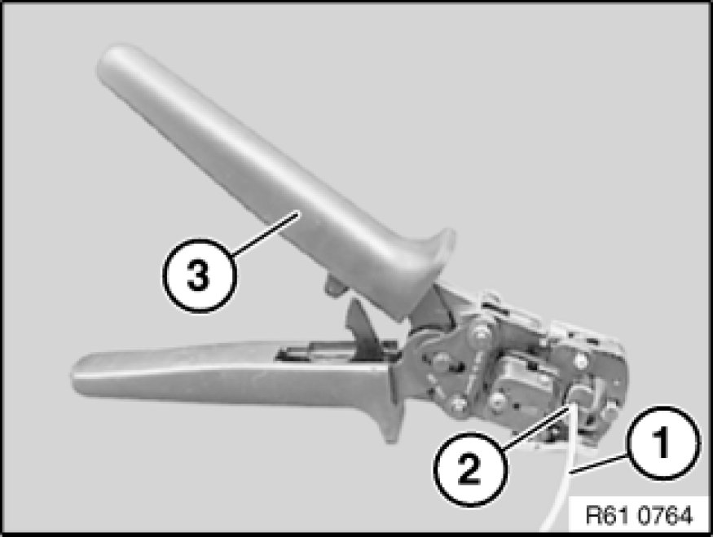

Cutting off, Stripping Insulation and Cutting Optical Fibers to Length
61 13 ... - Cutting off, stripping insulation and cutting optical fibers to length

Special tools required:
- 61 4 320 61 4 320 Crimping Set with Pliers

To cut off, strip insulation and cut optical fibers to length, use pliers 61 4 321 (1) in conjunction with crimping head 61 4 322 (2) from crimping set 61 4 320 61 4 320 Crimping Set with Pliers.
Note:
Pliers (1) open automatically as far as they will go when handles are pressed together.

Cutting optical fiber
Open pliers (1).
Place optical fiber (2) in cutting device (3).
Close pliers (1) and remove optical fiber (2).

Stripping insulation from optical fiber
Open pliers (1).
Open lever (2) in direction of arrow.

Slide optical fiber (1) into stripping device (2) until flush at point (3).
Close pliers (4) fully.
Close clamping lever (5) in direction of arrow.
Open pliers (4) by one tooth notch.
Open clamping lever (5) against direction of arrow again and remove optical fiber (1).
Note:
A stripping replacement blade set is available under number 61 4 327.

Cutting optical fiber to length
Important!
The cutting blade must be replaced prior to each cutting of the optical fiber.

Pull pin (1) in direction of arrow.
Fold up blade retaining link (2) in direction of arrow.

Warning!
Risk of injury when changing the blade.

Remove blade (1) and replace.
Installation:
Make sure blade (1) is correctly seated on locating points (2).

Open pliers (3).
Slide optical fiber (1) into cutting device (2) until insulation of optical fiber (1) butts against clamping device.
Close pliers (3) fully and keep closed.
Remove optical fiber (1).